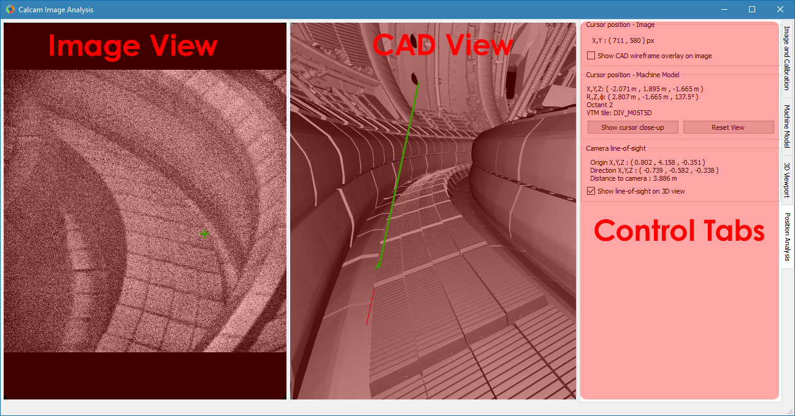

Image Analyser
The Calcam image analyser tool provides a convenient interactive way to convert between 2D image positions and 3D real space positions, given a Calcam calibration and camera image. While more flexible analysis functionality can be built using the python API, this tool provides a fast and convenient way to do basic image position analysis.
The image analyser window is shown below:
Loading an image to analyse
At the top of the Image and Calibration control tab is a group of controls for loading an image you want to analyse. The From dropdown list selects the source from which you want to load the image. The options available as standard are loading from an image file (default) or loading an image from another Calcam calibration. If you define any custom image sources (see Image Sources), they will also appear in this dropdown menu. Once an image source is selected, the relevant inputs to set up the image loading appear below the dropdown list. Once the relevant fields are completed, click the Load button to load the image. Note: if the image is loaded before any calibration, it may be displayed in its original orientation until a calibration is loaded. Basic information about the current image id displayed in the Image box.
Image enhancement & colour mapping
It is often helpful to apply a colour map to monochrome images to make different pixel values more visibly distinct. If a monochrome image is loaded, a colour map can be applied by selecting the Apply colour mapping checkbox on the Image and Calibration control tab. The colour map can be selected from a list of common MatPlotLib colour maps and the minimum and maximum values for the colour mapping can be set.
For either monochrome or colour images, image enhancement can be applied to try to make image details more easily visible, using the Apply Image Enhancement checkbox on the Image and Calibration tab. Note: image enhancement and colour mapping cannot be applied simultaneously; turning one on will turn off the other.
If the image is shown in the 3D view mapped to the CAD model (see Projecting images to the CAD model), the colour map / image enhancement is also applied to the image projected on to the CAD view.
Loading a Calibration
The calibration to use for the analysis is also controlled on the Image and Calibration control tab. To load a calibration to use for the analysis, click the Load… button in the Calibration for analysis box. This box also displays the name of the currently loaded calibration, and full details of the calibration can be viewed by clicking the Properties… button in this box.
If the loaded calibration contains information about the CAD model settings last used when the calibration was edited, the applicable CAD model will be automatically loaded, if available. The CAD view will also be set to match the camera view automatically when the calibration is loaded.
The Movement Correction… button can be used to check for, and adjust, any mis-alignment between the loaded image and calibration e.g. if the camera has moved slightly since it was calibrated. For more information see the Checking & Adjusting Calibration Accuracy section below.
Loading a CAD model
If the CAD model is not loaded automatically when loading the calibration, or you want to change the CAD model used, this is controlled on the Machine Model control tab. At the top of this tab are controls for loading a CAD model. Two dropdown boxes are provided to select the CAD model to load and the model variant. The Load button to the right of the model variant then loads the model. Underneath the model variant dropdown box is a checkbox labeled Enable default model features on load: if checked, the default parts of the CAD model are all loaded as soon as the model itself is loaded. If not checked, the model definition will be loaded but none of the 3D mesh data will be loaded, and instead you can turn on features individually. This is useful if working with a large model on a slow computer where you don’t want to wait for the whole model to load if not needed. You can change to a different CAD model or variant at any time by selecting a different item from the dropdown boxes and clicking Load again.
Turning CADmodel features On/Off
For CAD models composed of multiple parts in separate mesh files, individual mesh files can be turned on or off by ticking/unticking them in the Enable / Disable Features panel. This can be done for individual parts, groups of parts (if defined in the CAD model) or the entire model. This can be helpful to improve performance when working with large models if not all parts are necessary for a particular calibration, or for removing parts which are in the way and make the calibration more difficult.
Checking & Adjusting Calibration Accuracy
When using a Calcam calibration to analyse an image, it is often desirable to check if the loaded calibration agrees well with the current image, for example to check if the camera has moved since the time it was calibrated, and to be able to make adjustments to improve accuracy if the camera has moved. The image analyser contains features which can help with this:
CAD Overlay
Similarly to the fitting calibration tool, a view of the CAD model rendered based on the loaded calibration and be overlaid on the loaded image. This can be used to confirm that the calibration is accurate for the loaded image, since for an accurate calibration, the overlay should align perfectly with the image. The CAD overlay can be turned on and off on the Position Analysis tab, under Display options. By default this shows the CAD model in wireframe, but can be changed to a solid-body view of the CAD model with the dropdown box next to the Show CAD overlay on image checkbox. The colour and transparency of the CAD overlay can be adjusted with the controls which appear below this checkbox when enabled. If the CAD model overlay shows the calibration is not well aligned, see the following section for instructions to make adjustments.
Movement correction tool
The image movement determination tool can be opened from the Image and Calibration tab, using the Movement Correction… button. This opens the calcam movement correction GUI, with the image stored in the calibration (i.e. the one used to produce the calibration) as the reference image and the currently loaded image as the current image. This allows the user to determine, and correct, any misalignment between the originally calibrated image and the current one, to ensure accurate results. For details of how to use this interface, see the Camera Movement Determination page. When satisfied, if you click OK in the movement correction tool, the currently loaded camera image will be warped, based on the determined movement, to align better with the calibration. Note that any displayed image pixel coordinates when performing subsequent analysis will have this warping accounted for, so pixel coordinates are still accurate with respect to the image as it was loded, with no warping. If instead Cancel is clicked in the movement correction interface, the movement correction will not be updated (i.e. it will stay the same as before the movement correction dialog opened, which may be no movement correction).
Performing Position Analysis
Placing cursors and obtaining coordinates
With an image, calibration and CAD model loaded, clicking on either the CAD model view or image will place a cursor at the clicked position (or move the existing cursor to the clicked position). A cursor will also appear showing the corresponding position on the other view (image or CAD model). Quantitative information about the current cursor position is displayed on the Position Analysis tab, including:
Pixel coordinates of the position in the image (rounded to the nearest pixel)
3D position in the CAD model in cartesian and cylindrical coordinates
The 3D vector line of sight between the camera and cursor
The distance from the camera to the cursor
If the camera has multuple sub-views and the clicked position is visible in more than one sub-view, the pixel coordinate, line of sight vector and distance are displayed for each sub-view.
The cursor will be green if the chosen position is visible to the camera. If the cursor is placed on the CAD model at a position not visible to the camera, the cursor turns magenta on the CAD model view. If the cursor position is within the image field of view but hidden behind part of the CAD model from the camera’s point-of-view, a magenta cursor will also appear on the image at the position where that point would be if it was not hidden from view.
By default, the CAD model view will also show a solid green line in 3D representing the line of sight from the camera to the cursor position. A magenta line shows the continuation of the sight-line after it has passed the cursor. If the cursor is hidden from the camera’s view, a green sight-line is shown up to the point where the sight-line hits the object hiding the cursor, then the remainder of the sight-line is shown in red. Display of the line-of-sight vector can be turned on or off using a checkbox on the Position Analysis tab.
Projecting images to the CAD model
For cameras observing the surfaces of the device, e.g. infrared thermography cameras, it can be useful to visualise the camera data mapped on to the surface of the CAD model. This can be done by activaing the Show image mapped on to CAD model checkbox on the Position Analysis tab.
Note
When activating this feature for the first time with a given calibration, the process to calculate the projection can be very slow, particularly with complex CAD models and/or high resolution images. During this time the application will show a “busy” mouse cursor. After this, turning the projection off then back on, or making adjustments to the image e.g. changing colour mapping, enhancement or movement correction options will not take significant time since the mapping does not need to be re-calculated.
Exporting Images
When performing image analysis using this tool it may be useful to export the current 2D and/or 3D views to use to illustrate the results. This can be done using the controls in the Save image section of the Position Analysis tab. If including the 2D image view the output image size is limited such that the camera image will appear “actual size” in the output, however if only including the 3D / CAD view, the output image can be rendered at higher resolutions selected with the Output dimensions dropdown box.